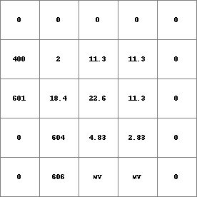
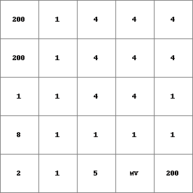
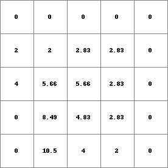

slopelength¶
slopelength
Accumulative-friction-distance of the longest accumulative-friction-path upstream over the local drain direction network cells against waterbasin divides
Result = slopelength(ldd, friction)
- ldd
- spatial ldd
- friction
- spatial, non spatial scalar
- Result
- spatial scalar
Options¶
--unittrue or --unitcell:
- --unittrue
- distance is measured in true distance (default)
- --unitcell
- distance is measured in number of cell lengths
Operation¶
For a cell on a local drain direction network its catchment is made up of the cell itself (the outflow cell) and all cells that drain to the cell. The catchment is circumscribed by the divide. Call the cells in the catchment against this divide the divide cells of the catchment: neighbouring cells of the divide cells are cells downstream of the divide cell in the same catchment as the divide cell or cells on the other side of the divide. As a result there are no cells that drain to a divide cell. For each divide cell a downstream path can be defined which begins at the centre of the divide cell, follows the local drain directions in downstream direction and stops at the centre of the outflow cell of the catchment.
For all cells the following procedure is performed: using the local drain direction network on ldd the divide cells of the cell its catchment are determined, where the cell itself is the outflow cell of the catchment. Now, for each divide cell the accumalative-friction distance over its downstream path to the outflow cell is calculated as follows: an amount of friction moves through the consecutively neighbouring downstream cells, following the downstream path of the divide cell, until it reaches the centre of the outflow cell under consideration. It accumulates each time it travels from one cell to its downstream next starting with an amount of 0 at the divide cell. The amount of friction which accumulates per unit distance when moving from one cell to the next is specified by the cell values on friction. Using the values on this expression, accumulation of friction when travelling from one cell to its first downstream cell is calculated as follows: Let friction(sourcecell) and friction(destinationcell) be the friction values at the cell where friction is transported from and at its downstream cell where friction is transported to, respectively. While moving from the source cell to the destination cell the amount of accumulated friction is incremented with:
distance x {(friction(sourcecell)+friction(destinationcell)}/2
where distance is the distance between the sourcecell and the destination cell. This distance equals the cell length if the source cell and the destination cell are neighbours in horizontal or vertical directions; it equals sqrt(2) multiplied with the cell length if the cells are neighbours in diagonal directions.
For all divide cells the accumulated-friction-distance of the downstream path to the outflow cell is determined. The accumulated-friction-distance of the downstream path resulting in the greatest accumulated-friction- distance is assigned to the outflow cell on Result. This procedure is performed for each cell, where each cell is regarded as a outflow cell of an catchment with one or several divide cells.
Notes¶
The values on friction must be larger than zero. A cell with a missing value on ldd is assigned a missing value on Result. A cell with missing value on friction is assigned a missing value on Result; all cells which are on the downstream path of the missing value are also assigned a missing value on Result, unless they also make part of another downstream path.
Group¶
This operation belongs to the group of Neighbourhood operators; local drain directions
See Also¶
Examples¶
- • pcrcalcbindingResult2 = Result2.map;Ldd2 = Ldd2.map;FrictMat = FrictMat.map;initialreport Result2 = slopelength(Ldd2,FrictMat);• pythonLdd2 = readmap(“Ldd2.map”)FrictMat = readmap(“FrictMat.map”)Result2 = slopelength(Ldd2,FrictMat)
Result2.map Ldd2.map FrictMat.map  
 - • pcrcalcbindingResult1 = Result1.map;Ldd2 = Ldd2.map;initialreport Result1 = slopelength(Ldd2,1);• pythonLdd2 = readmap(“Ldd2.map”)Result1 = slopelength(Ldd2,1)
Result1.map Ldd2.map 